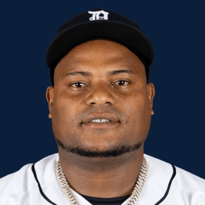

BASE KEEP
The Keep · The Diamond
Player File · SP BAL

Framber Valdez
#59 · SP · Detroit Tigers · age 32 · B/T RL · 5' 11" / 230 lbs · MLB debut 2018 · Palenque, Dominican Republic
Keep avg188.0
# Boards3
BK Value1,152
Spread101–339
Pitching
| Year | G | GS | W | L | SV | HLD | IP | K | BB | HR | ERA | WHIP | K/9 |
|---|---|---|---|---|---|---|---|---|---|---|---|---|---|
| 2026 | 25 | 25 | 8 | 8 | 0 | 0 | 138.2 | 111 | 54 | 13 | 4.35 | 1.40 | 7.20 |
| 2025 | 31 | 31 | 13 | 11 | 0 | 0 | 192.0 | 187 | 68 | 15 | 3.66 | 1.24 | 8.77 |
The Keep#196BK 1,152
BK's Pitchers#67BK 3,964
The Diamond#193BK 1,184
The 2026 line
Keep #196 · avg 188.0 · 3 boards · 4.35 ERA, 1.40 WHIP, 111 K in 138.2 IP
Baseball Savant
Starcast · spray · pitch
Percentile ranks (Starcast) plus the official Savant spray chart for bats and pitch chart for arms. Open the full Baseball Savant page.
Pitcher · 2026
xERA
32
xwOBA
32
FB Velo
39
FB Spin
23
CU Spin
89
K %
20
BB %
45
Whiff %
13
Chase %
51
Barrel %
70
Hard Hit %
12
EV
15
Max EV
24
Pitch chart
Minus
- Board spread 101–339 (238 ranks).
Board graph
Spread 101–339 · 3 sources
Every Board
Spread 101–339 · 3 sources
| Source | Rank |
|---|---|
| TDG Points | 101 |
| FantasyPros Dynasty ECR | 124 |
| RotoGraphs Model | 339 |
BK News
- Today's top games to watch, best bets, odds: Phillies vs. Mariners, Cubs vs. Diamondbacks and more
- Former NY Mets slugger Pete Alonso makes it clear how he feels about his move to the Orioles
All players · The Keep · The Diamond · BK News · The Lineup · Pitchers · Calculator